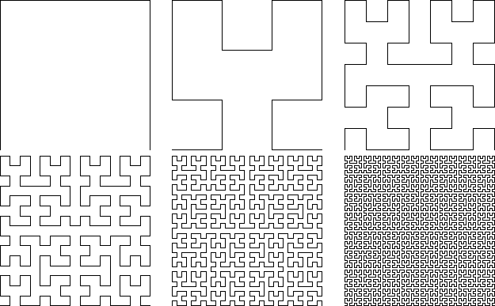

Take the alphabet
| F -> F |
| + -> + |
| - -> - |
| x -> -yF+xFx+Fy- |
| y -> +xF-yFy-Fx+ |
Here we give F, +, and - these interpretations
| F means move one step forward while drawing a line |
| + means turn counterclockwise by 90 degrees |
| - means turn clockwise by 90 degrees |
Starting from a horizontal line segment, here are the geometric realizations of the first six steps.
|  |
With this rescaling, we get the sense that successive steps converge to a limiting shape, and that shape appears to fill a square. In fact, this is a way to construct Hilbert's space-filling curve.
Return to L-System Geometry.